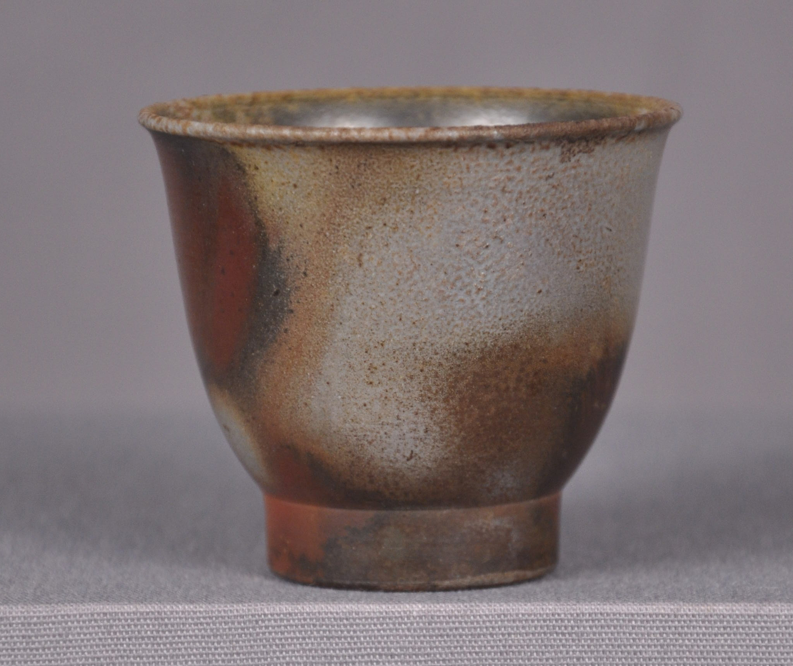
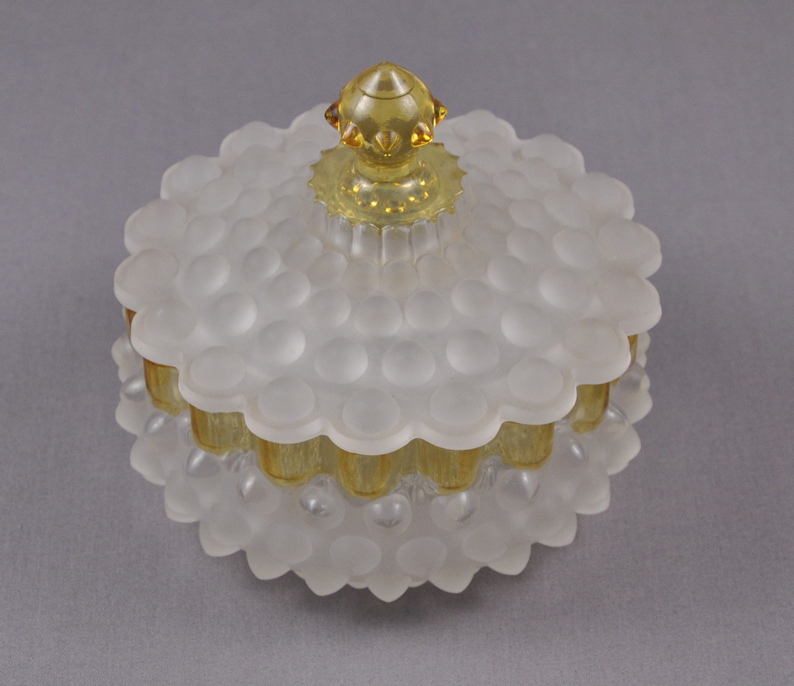
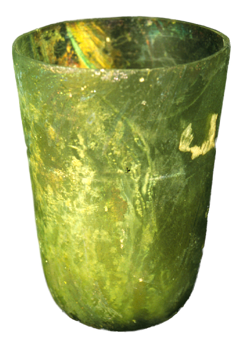
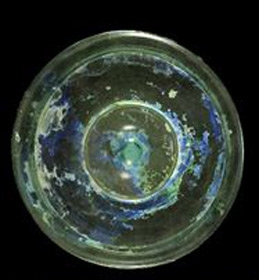
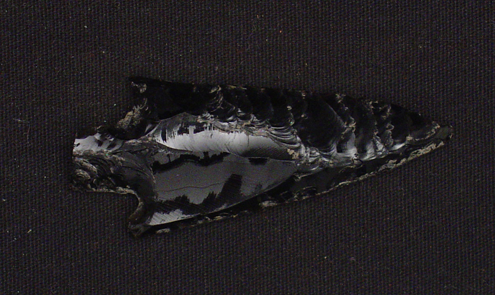
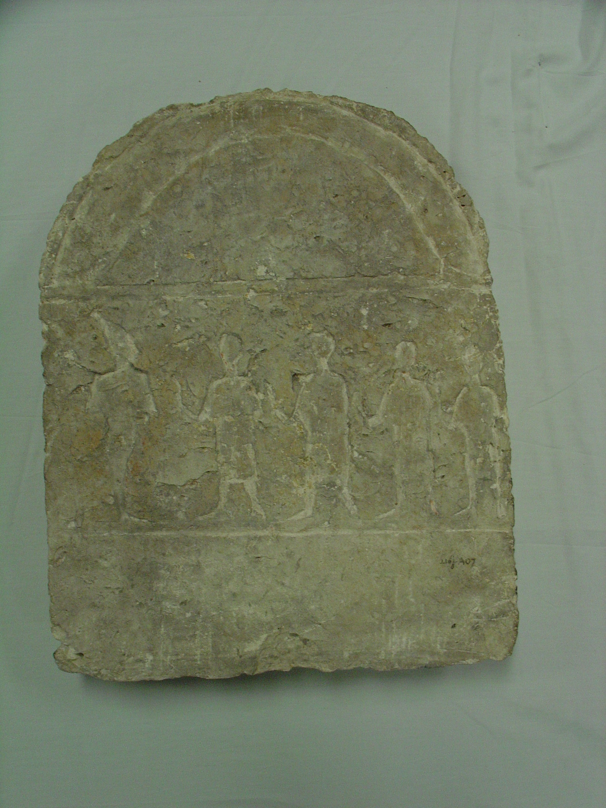
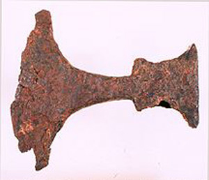
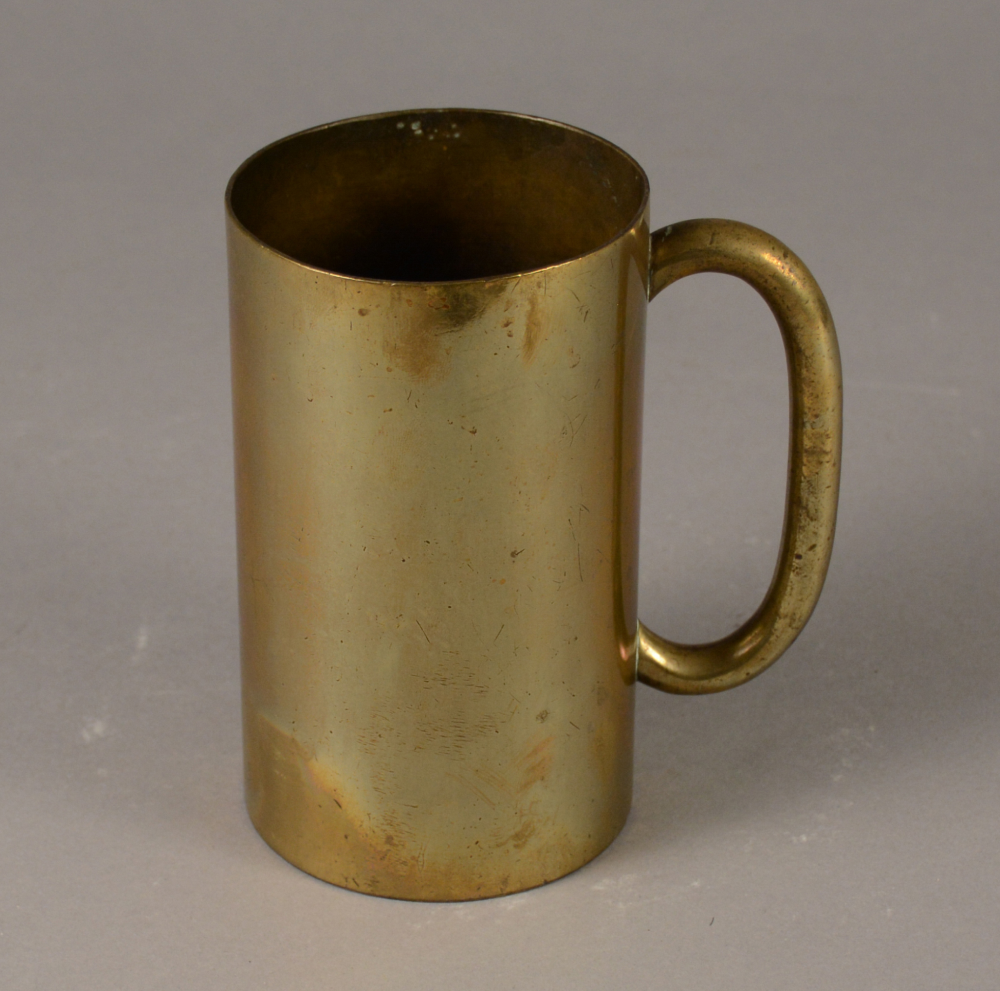

Earthenware figurine fragment (low-fired ceramic). Courtesy of The Spurlock Museum, University of Illinois at Urbana-Champaign.Courtesy of The Spurlock Museum, University of Illinois at Urbana-Champaign.
Earthenware bowl (low-fired ceramic) with superficial scratches and abrasions. Courtesy of The Spurlock Museum, University of Illinois at Urbana-Champaign.
Porcelain dish (high-fired ceramic) in good condition. Courtesy of The Spurlock Museum, University of Illinois at Urbana-Champaign.
Porcelain plate (high-fired ceramic), stained and with crazing. Courtesy of The Spurlock Museum, University of Illinois at Urbana-Champaign.
Stoneware storage jar (high-fired ceramic). Courtesy of The Spurlock Museum, University of Illinois at Urbana-Champaign.
Description
Ceramic objects are made from natural materials/clay mixtures that are pliable when wet and shaped into particular forms that are then dried and/or fired to become hard/solid objects. Ceramics may be formed using a variety of construction methods, including by hand, in a mold, or thrown on a wheel. Fired ceramics are fired one or more times to achieve various levels of vitrification (chemical fusion/bonding). This affects their porosity and permeability to liquids. Only when clay is fired at temperatures higher than 1652℉ (900℃) do the particles in the clay bond (a process called sintering) and become stronger. Full vitrification, which is the bonding of particles that results in the reduction of porosity, makes the clay more impermeable to water and occurs at even higher firing temperatures. While firing temperature largely determines the strength of ceramic items, surface treatments and construction methods also have an impact on the strength, fragility, and preservation of ceramics.
Ceramics are typically divided into three categories, based on the results that firing temperatures have on the material characteristics and strength of ceramic items: 1) unfired; 2) low-fired; and 3) high-fired. Unfired ceramics include adobe and mud brick; low-fired ceramics include earthenware and terracotta; and high-fired ceramics includes stoneware and porcelain. The higher the temperature at which the items are fired, the lower the porosity and the more vitrified they become. Unfired and low-fired objects are at risk of re-hydration because they are porous and not vitrified.
Unique properties may be achieved through the use of additives in the clay mixture as well as the application of surface treatments like glaze, to the object. Mixtures used to make ceramics include bulk clay, fluxes, and non-plastic additives. The bulk clay is mixed with water so it can be formed into objects. The higher the temperature at which bulk clay is fired, the harder and more brittle it becomes. Fluxes, such as soda, mica, potash, and lime lower the temperature at which the object needs to be fired. Non-plastic additives are added to reduce shrinkage and the potential for cracking in the kiln, but this increases the porosity. Surface treatments can be used for decoration, but vitrified glazes can also be applied to porous ceramics to make them waterproof.
Archaeological Ceramics
Generally, archaeological or buried ceramics are more unstable and at higher risk for further deterioration. Ceramics that have been buried may show distinct types of deterioration, evidence of which can help users identify whether they are working with archaeological or non-archaeological ceramics. Porous materials (like some ceramics) that have been buried, may later display signs of salt efflorescence, which appears as a white haze on the surface of a ceramic object. Ceramics can absorb soluble salts from the soil in which they were buried, so they are particularly susceptible to this type of damage. Soluble salts that have been absorbed by porous ceramics can react to changes in humidity, either becoming soluble in high humidity or crystallizing in low humidity. Over time, the movement of soluble salts will cause the decorative surface or the body of the ceramic to crack or crumble. Soluble salt damage is more likely to be seen on more-porous unfired and low-fired ceramics. High-fired ceramics that are fully vitrified, like porcelain, are waterproof and thus impervious to damage from soluble salts. Although non-archaeological objects may absorb soluble salts throughout their everyday use, visible salt efflorescence on a porous ceramic item can be a clue that the item was once buried. Knowing the age and history of the object can also help with identification. Read more on Archaeological Objects in the Museum Objects in General section of the Collection ID Guide.
The 3 Main Types of Ceramic
Unfired
Unfired ceramic bowl. Courtesy of The Spurlock Museum, University of Illinois at Urbana-Champaign.
Unfired clay tablet. Courtesy of The Spurlock Museum, University of Illinois at Urbana-Champaign.
Adobe and Mudbrick
Adobe is a clay mixture that has been dried to harden, but is not fired. Fibrous materials (like straw) are often mixed into the adobe clay in order to prevent cracking during curing/drying. Similar to adobe, mudbrick is often made of a mixture of clay, sand, and silt (with fibrous materials added to prevent cracking) that is dried and then shaped. For centuries, unfired ceramics were primarily used for building materials (particularly in arid and semi-arid climates), but they were also used to make decorative and utilitarian items, including cuneiform tablets.
Low-fired
Terracotta pot (low-fired ceramic). Courtesy of The Spurlock Museum, University of Illinois at Urbana-Champaign.
Terracotta lamp (low-fired ceramic). Courtesy of The Spurlock Museum, University of Illinois at Urbana-Champaign.
Terracotta
The term “terracotta” refers to any kind of fired clay, but more specifically it is an unglazed ceramic object made from coarse, porous clay. Terracotta has been used worldwide since the Early Bronze Age (3000 BCE). Generally terracotta ranges in color from red to dull ochre, and Is typically left unglazed. Like earthenware, terracotta is typically fired at lower temperatures, between 1060-1162°C. Terracotta is generally used for utilitarian objects due to its inexpensiveness and durability.
Earthenware
Earthenware pitcher (low-fired ceramic). Courtesy of The Spurlock Museum, University of Illinois at Urbana-Champaign.
Earthenware (low-fired) ceramic. Courtesy of The Spurlock Museum, University of Illinois at Urbana-Champaign.
Earthenware (low-fired) ceramic. Courtesy of The Spurlock Museum, University of Illinois at Urbana-Champaign.
Earthenware is a slightly porous, low-fired pottery. Most ceramics from North American archaeological sites are earthenware. Earthenware is generally fired between 1742-2012°F (950-1100°C). It is not vitrified and is the most porous of fired ceramics. Sintering (when the particles in the clay bond) but not vitrification, occurs during the firing process -- making earthenware water permeable and typically soft (and scratched easily). Because of its porosity, unglazed earthenware is at risk of rehydration if exposed to fluctuations in relative humidity. When earthenware is glazed, there is a clear visual distinction between the ceramic body and the glaze. Earthenware is often reddish, black, brown, or yellow, and looks granular with coarse particles in the surface of the clay. Earthenware can be decorated with slip (a thin layer of a liquid clay and water mixture that is sometimes applied over the clay body before the first firing), but may be glazed to reduce its permeability to liquids. If glazed, the earthenware object is fired, glazed, then fired again -- this creates an amorphous, relatively water-tight glass/glaze layer over the body of the ceramic.
The two (main) types of glazed earthenware are: 1) Lead glazed: when a transparent lead glaze is applied to the body; and 2) Creamware: when an opaque tin glaze is applied to the body. Creamware is sometimes referred to as "tin-enameled, tin-glazed, majolica, faience, or delft.
High-fired
Stoneware platter (high-fired ceramic. Courtesy of The Spurlock Museum, University of Illinois at Urbana-Champaign.
Stoneware sugar bowl (high-fired ceramic), with chips and staining. Courtesy of The Spurlock Museum, University of Illinois at Urbana-Champaign.

Stoneware cup (high-fired ceramic). Courtesy of The Spurlock Museum, University of Illinois at Urbana-Champaign.
Stoneware
Stoneware is partially vitrified pottery that is less porous than earthenware. Typically stoneware is fired between 2012 and 2462°F (1100 and 1350°C), so the end product is partially vitrified. It can range in color, but is often brown, pale yellow, or gray in color. Stoneware is harder and denser, and does not scratch as easily as earthenware. Stoneware will make a distinctive “ringing” sound when tapped. When looking at a cross section of stoneware, there is less of a distinction between the clay body and the glaze then there is in low-fired ceramics. Stoneware is usually opaque, but can be quite thin and thus somewhat translucent. The earliest stoneware dates from China, ca. 1400 BCE.
Porcelain
Porcelain is a hard, vitrified ceramic with a fine-grained, white, translucent body. Of all pottery types, it is fired at the highest temperatures, typically above 2372°F (1300°C), making it totally non-porous and impervious to water even when left unglazed. The main ingredient of porcelain is a fine-grained clay called kaolin, which can be molded easily and formed into delicate and complex structures. Porcelain can be very thin and has a higher pitch ring than stoneware when tapped, and there is almost no visible distinction between the glaze and the body of the ceramic. The three main types of porcelain are hard-paste, soft-paste, and bone china. Hard paste porcelain is the hardest and least porous. Bone china is more durable than soft-paste but softer than hard-paste.
Porcelain cup (high-fired ceramic). Courtesy of The Spurlock Museum, University of Illinois at Urbana-Champaign.
Porcelain tea cup (high-fired ceramic). Courtesy of The Spurlock Museum, University of Illinois at Urbana-Champaign.
Construction Methods
Example of coiled pottery, unfired. Courtesy of The Spurlock Museum, University of Illinois at Urbana-Champaign.
Terracotta bowl (low-fired ceramic). An example of a wheel-thrown ceramic. Courtesy of The Spurlock Museum, University of Illinois at Urbana-Champaign.
By hand
Pinched: objects are formed by working or pinching the clay by hand into the desired shape.
Coiled: objects are formed by coiling long, round strands of clay, which are slowly built up in a spiral pattern and pressed together to form a vessel. The body is usually smoothed to eliminate the ridges left by the coils, but sometimes ridges will still be visible.
Slab: objects are built by gluing together flattened slabs of clay using slip.
By potter’s wheel
Objects are shaped with the assistance of a turning wheel. The clay object sits atop the wheel while the potter uses his or her hands to give shape to the object while the wheel turns, giving the object a uniform shape and thickness.
Molded/mold-pressed
Objects that cannot be shaped by hand or with a wheel can be shaped with the use of a pre-shaped mold.
Solid cast: the slip is poured into plaster mold to form the cast inside the cavity.
Slip cast: objects are surrounded by plaster with a slip reservoir, a thin cavity where slip is inserted.
Hollow cast: a plaster mold is allowed to absorb the slip and once the cast is dry, it is trimmed and allowed to dry.
Surface Treatments
Glazes
Glazes are thin, glassy, vitrified layers on the surface of a ceramic object. Glazes can be produced by firing on a coating applied directly to the object, firing the object in the presence of alkali vapor, or as a result of slag attack on a refractory material. Glazes can be partially crystalline. The word “glaze” may also refer to the prepared mixture, either the powder or the powder suspended in water, prior to application.
Lead glazes are made from lead oxide mixed with other materials. Lead glazes melt at a low temperatures, and have a smooth, glassy surface that is easily scratched. There is a health risk associated with lead glazes: acidic foods can dissolve the glaze, releasing lead into food. The addition of frit (glass powder) can make lead glazes non-toxic.
Alkaline glazes are made when alkali fluxes such as sodium, lithium, and potassium are added to the kiln during firing, when the highest temperatures are reached. A glaze is formed from a chemical reaction between the silica in the clay and the alkali that has been added to the firing. Salt and ash glazes are examples of alkaline glazes. Alkaline glazes may be brilliantly colored. They may craze or crawl, and can be easily scratched if not enough frit is added to the glaze mixture.
High-fire glazes are usually feldspar-based, and are vitrified, hard, smooth, and waterproof. They are used on stoneware and porcelain, and often have less vibrant colors than low-alkaline and lead glazes.
Other types of glazes include: crystalline glaze which forms crystals when it is cooled and matte glaze which has intentionally become partially devitrified. These glazes usually do not have lead.
Slip or Engobe
Slip or Engobe is a thin layer of a liquid clay and water mixture that is sometimes applied over the clay body before the first firing. Slip/engobe is usually matte, but can be burnished to a smooth, shiny appearance. Sgraffito is a decorative technique in which patterns are scratched through colored engobe applied to dried ceramics to exposed the clay body.
Other treatments and decorations
Under-glaze decoration are decorations that have been applied to the object after the first bisqueware firing, but prior to the application of the glaze. These decorations are durable, but the range of color is limited due to the high temperature of the subsequent firing.
Over-glaze decoration are added decorations on surface, that may be applied with brush on unfired clay or may be applied after glaze has been fired, in which case it is fired a second time at a lower temperature. Gilding (gold), for example, is applied to ceramic surfaces later, and then refired at only low temperatures, so it is only loosely adhered to the ceramic and fragile. Other surface coatings include gesso, resins, waxes, and powdered minerals.
Risks
Like many museum objects, ceramics are generally fragile and at risk to damage from mishandling. Unfired and low-fired ceramics are porous, so they are easily scratched and permeable to liquids. Ceramics fired at higher temperatures are less porous, but they are harder and more brittle, so more susceptible to impact damage. Ceramics’ inherent risks are exacerbated by manufacturing flaws and/or by deterioration/damage due to improper storage and mishandling. Archaeological or buried ceramics are also more unstable and at higher risk for further deterioration.
Flaws
Flaws that can occur during the manufacture are a sign that an item may be unstable, and thus prone to further damage.
Warping: can happen when the clay body is unevenly heated or cooled.
Spalling or Delamination: can occur when firing temperatures are not high enough.
Sagging: can happen when the firing temperature is too high.
Cracking: can occur if ceramic is cooled too quickly.
Bloating: happens when ceramic is heated too quickly (gases formed during firing are trapped in body of the ceramic).
Flaws that can occur in the glaze:
Porcelain plate (high-fired ceramic) with crazing and staining. Courtesy of The Spurlock Museum, University of Illinois at Urbana-Champaign.
Archaeological ceramic fragment showing evidence of crazing. Courtesy of the Illinois State Archaeological Survey, University of Illinois.
Archaeological ceramics showing evidence of crazing and spalling. Courtesy of the Illinois State Archaeological Survey, University of Illinois.
Archaeological ceramic fragment showing evidence of spalling and staining. Courtesy of the Illinois State Archaeological Survey, University of Illinois.
Crazing: when the glaze surface contracts or shrinks at a rate faster than the clay body, a network of fine cracks may appear on the the surface of the glaze layer. Crazing may be visible right after firing, or may appear long after firing. Crazing can also happen if an item is cooled too quickly. Sometimes crazing is purposeful, as decoration.
Shivering: happens when the glaze surface contracts or shrinks at a rate slower than the clay body, causing the glaze to flake or peel.
Crawling: occurs when the glaze shrinks into independent blobs, leaving behind “holes” or bare, unglazed areas on the clay surface. Crawling can happen when dirt or oils on the clay’s surface prevent the glaze from sticking evenly. Crawling can also be done purposely for decorative effect.
Pitting: occurs when the firing temperature is increased or decreased too quickly (so volatile materials don’t have a chance to completely escape before the glaze solidifies). Pitting can also happen if the glaze is fired at temperatures that are too high (boiling the glaze).
Blistering: happens when when air is trapped between the glaze and the clay body or when the glaze is too thick.
Deterioration and Damage
Deterioration and damage of ceramic objects may also be caused after manufacture, by use, exposure to the elements, poor handling, and bad repairs. Often, deterioration and damage result from a combination of these causes. Signs of flaws and damage indicate that an item may be unstable, and thus prone to further damage.
Terracotta bowl (low-fired ceramic), with chips and archaeological deposits from soluble salts. Courtesy of The Spurlock Museum, University of Illinois at Urbana-Champaign.
Earthenware bowl (low-fired ceramic), with signs of impact damage. Courtesy of The Spurlock Museum, University of Illinois at Urbana-Champaign.
Porcelain bowl (high-fired ceramic) with signs of impact damage. Courtesy of The Spurlock Museum, University of Illinois at Urbana-Champaign.
Earthenware cup (low-fired deramic) with signs of abrasion and impact damage. Courtesy of The Spurlock Museum, University of Illinois at Urbana-Champaign.
Terracotta figure (low-fired ceramic) with efflorescence from soluble salts. Courtesy of The Spurlock Museum, University of Illinois at Urbana-Champaign.
Earthenware pot (low-fired ceramic) with efflorescence from soluble salts. Courtesy of The Spurlock Museum, University of Illinois at Urbana-Champaign.
Terracotta bowl (low-fired ceramic) with efflorescence from soluble salts. Courtesy of The Spurlock Museum, University of Illinois at Urbana-Champaign.
Impact damage: Ceramics can be easily damaged by the impact of a fall or resulting from poor handling. While the surface of unfired and low-fired ceramics are more permeable to liquids, low- and unfired ceramics are typically tougher (and thicker) and not as brittle as high-fired ceramics. Porcelain and other high-fired ceramics, while less porous, are harder and more brittle; they may break or chip more easily as a result.
Functional Damage: Nicks, scratches, dings, cracks, or chips caused by normal use of an object (vase, pitcher, plate, etc.). This type of damage is be expected in functional ceramics, however severe damage can compromise the integrity of the item.
Abrasion: Contact with other materials, for example, stacking ceramic vessels or silverware scratching, can abrade the surface of all types of ceramics. Lower-fired ceramics have glazes that are less chemically bonded to their clay bodies, so they are more susceptible to scratches. High-fired ceramics like porcelain, are less susceptible, but not not immune to abrasion damage.
Water: Low-fired ceramics are porous and will absorb water. Some can rehydrate if exposed to water or wet conditions. Gypsum (hydrated calcium sulphate) and calcite (calcium carbonate) will dissolve in water; if an object is buried or exposed to water, the gypsum and/or calcite in the clay can dissolve over time. A stable environment will cause gypsum and calcite to dissolve much more slowly, as they become surrounded by saturated salt solution.
Soluble salts: Contact with soil, food, or chemicals may cause ceramics to absorb water soluble salts, which can then re-crystallize and cause damage to the body and/or surface of the ceramics. Soluble salts react to changes in humidity, either becoming soluble in high humidity or crystallizing in low humidity. A white haze on the surface of a ceramic object is indicative of soluble salts in the body of the object. Over time, the movement of soluble salts will cause the decorative surface or the body of the ceramic to crack or crumble. Archaeological or buried ceramics are particularly susceptible to this type of damage, as they absorb soluble salts from the soil in which they are buried. Non-archaeological objects may absorb soluble salts throughout their everyday use. Soluble salt damage is more likely to be see on more-porous unfired and low-fired ceramics. High-fired ceramics that are fully vitrified, like porcelain, are waterproof and thus impervious to damage from soluble salts.
Staining and Encrustations: Ceramics with crazing or chips in their glazes can become stained by food and other materials that may seep through the breaks in the glaze and stain the porous ceramic below. Ceramic vessels may also become stained by the residue of whatever material they once contained (i.e., oil or food). In addition, ceramics can become stained when they come in contact with iron (when buried) or other metals, for example: metals supports from a previous repair.
Light: Ceramics are typically not sensitive to light.
Acid attack: If a ceramic item is in long-term contact with an acidic substance, the acid can dissolve calcareous (composed of calcium carbonate) fillers in the body of the item and leave the object looking porous. Some glazes may lose lose their transparency a the result of acid deterioration. Crystalline or ‘artistic’ glazes, especially those which contain metal compounds, are susceptible acid attack. Stoneware and porcelain glazes, which have fewer metals, are less susceptible to acid attack.
Alkaline attack: Is a type of deterioration that occurs with glass, including ceramic glazes, which are chemically like glass. More likely to occur in humid and warm environments, alkaline attack may result in the surface of the glaze changing color or appearing iridescent.
Lead sulphide blackening: Under certain conditions, the growth of sulphite reducing bacteria associated with decaying plant and animal tissues may cause the blackening of lead glazes.
Fire damage: Exposure to high temperatures during a fire will have more of an impact on low-fired ceramics and glazes may change the microstructure of ceramic objects; the temperature at which these changes can occur is related to the initial firing temperature of the object.On-glaze decoration will be affected at lower temperatures than the glaze itself. Unfired decorations will be affected at much lower temperatures.
Porcelain plate (high-fired ceramic), example of adhesives from previous repairs becoming discolored. Courtesy of The Spurlock Museum, University of Illinois at Urbana-Champaign.
Porcelain dish (high-fired ceramic), example of adhesives from previous repairs becoming discolored. Courtesy of The Spurlock Museum, University of Illinois at Urbana-Champaign.
Ceramic bowl with metal staples from a previous repair. Courtesy of The Spurlock Museum, University of Illinois at Urbana-Champaign.
Metal repairs: Replacement parts for ceramics (e.g., handles and spouts) or internal repairs (rivets and dowels were often used for repair during the Victorian era), were often made of metal. Such metal repairs could cause discoloration, corrosion, or chipping and cracking (due to expansion) of the ceramic.
Adhesive repairs: previous repairs of ceramic are frequently undertaken using some type of adhesive, including animal glue, epoxy resin, polyvinyl acetate (PVA), and polyvinyl alcohol (PVOH). Like most materials, adhesives will also deteriorate over time - becoming discolored and sometimes brittle. For more information on adhesive repairs, see the PSAP adhesive guide.
Storage Environment
While ceramics are not necessarily sensitive to light or minor changes in humidity and temperature, significant climate swings can cause deterioration. Ideally, ceramics should be stored in the following environment: Temperature: 66°F (19°C) and RH: 50%, plus or minus 5%, but never above 60%.
Storage and Handling Methods
Ceramics are best handled infrequently, as most damage is the result of mishandling. When handling is unavoidable, since high-fired and glazed ceramics can become more slippery when wearing cotton, it is advisable to use nitrile gloves or gloves with friction dots. As with all objects, ceramics should be stored on shelves at a safe distance from one another and should not be stacked unless absolutely necessary (and if stacked, should have a layer of inert foam or acid-free tissue between layers). Ceramic objects should only be stored on shelves that are easily accessible, and they should be placed in closed shelving, boxes, and/or covered with acid-free tissue to prevent dust buildup and reduce the need for cleaning. Never pick up a ceramic object by a protruding part (even if that protuberance is a handle) -- lift and support the item underneath its center of gravity. For more information on storage and handling of objects please refer to the following sections in the Museum Objects in General section: Storage of Objects and Handling Objects
Archaeological ceramics spaced out and properly supported in storage. Courtesy of the Illinois State Archaeological Survey, University of Illinois.
Archaeological ceramics properly supported in storage. Courtesy of the Illinois State Archaeological Survey, University of Illinois.
Glass
Allowable Fluctuation: ±2°F; ±5% RH
Ideal
Acceptable
Temp.
65°F/18°C
65-72°F (18-22°C)
RH
Archaeological: 42% RH Non-Arhcaeological: 35% RH
Archaeological: 42-55% RH Non-Arhcaeological: 35% RH and lower
Blown glass lamp. Courtesy of The Spurlock Museum, University of Illinois at Urbana-Champaign.
Glass vase. Courtesy of The Spurlock Museum, University of Illinois at Urbana-Champaign.
Black glass button. Courtesy of The Spurlock Museum, University of Illinois at Urbana-Champaign.
Roman glass bottle. Courtesy of The Spurlock Museum, University of Illinois at Urbana-Champaign.
Archaeological glass bottle. Courtesy of the Illinois State Archaeological Survey, University of Illinois.
Description
Glass is an inorganic, amorphous solid material. The primary component of glass is called a former (most often silica), which is then combined with a flux material (such as soda or potash), stabilizer material (like calcium carbonate), and modifier material (like magnesium). Glass is found in many forms, both utilitarian and decorative, and while it is generally transparent, it can also be translucent, opaque, and/or colored.
Properties of Glass
Hardness and rigidity at normal or average temperatures, plasticity and moldability at elevated temperatures. Resistant to weathering and chemical attack, with the exception of hydrofluoric acid. Obsidian, a type of igneous rock, holds the properties of glass and is considered “volcanic glass,” however, in the PSAP obsidian is covered under stone. Further information on obsidian can be found in the Museum Objects in General section on stone. It can be difficult to distinguish between obsidian (stone) and glass, however obsidian is usually grey, black or brown and is chipped into some intentional form.
Archaeological Glass
Generally, archaeological or buried glass is more unstable and at higher risk for further deterioration. Glass that has been buried may show distinct types of deterioration, evidence of which can help users identify whether they are working with archaeological or non-archaeological glass. Glass that has been buried often exhibits signs of iridescence-- rainbow-colored, shiny, and flaky layers on the surface as a result of its exposure to moisture. Archaeological glass is also more likely to develop dulling or frosting, in which previously clear glass turns cloudy or shows a network of cracks that appear like patterns of frost on a window. In addition, obsidian, a shiny igneous rock that is considered “volcanic glass," is often found in archaeological environments. Read more on Archaeological Objects in the Museum Objects in General section of the Collection ID Guide.
Shaping/Construction Methods
Glass dish, an example of mold/pressed construction. Courtesy of The Spurlock Museum, University of Illinois at Urbana-Champaign.

Glass dish with lid, an example of mold/pressed construction. Courtesy of The Spurlock Museum, University of Illinois at Urbana-Champaign.
Millefiori glass beads. Courtesy of The Spurlock Museum, University of Illinois at Urbana-Champaign.
Millefiori glass beads. Courtesy of The Spurlock Museum, University of Illinois at Urbana-Champaign.
Mouth Blowing: In glass blowing, blobs of molten (around 2400°F or 1316°C) viscous glass are gathered onto the end of a pre-heated blowpipe. The glass is then rolled onto a flat sheet of steel or marble called a “marver,” which helps to shape the item. Next, air is blown into the glass, creating a bubble that can be increased, decreased, or to which additional glass can be added to form the piece. Glass can also be blown into a mold. Glass blowing was first seen in Rome in the mid-1st century BCE.
Glass Pressing: A blob of molten glass is placed into a mold (typically a metal mold) and then pressed into the correct shape by a plunger or “follower.” This technique was created in the United States between 1820 and 1830.
Pate de Verre: Frit, a mixture of granulated silica and flux materials, is mixed with gum arabic binder to form a paste, which is then pressed into a mold and fired.
Core dipping/winding: The oldest technique for glass shaping. A core of straw or dung is dipped into molten glass. The core and glass are then rolled over a smooth surface to shape the item. When the item is formed and glass is cooled, the core is removed.
Lost-wax: Lost-wax casting, or cire perdue, is a technique borrowed from metalworking. A model is created with wax and then encased in plaster or clay. When heated, the wax melts through vents in the plaster/clay. Once dry, this becomes a mold into which molten glass can be poured, pressed, or blown.
Millefiori: Italian for “thousand flowers,” this method involves the rolling together of long, thin (and typically multi-colored) rods of molten glass. These multi-colored rods or canes are then cut into small, round pieces called “murrine.” Murrine are sometimes used as beads in jewelry or melted together to achieve bright, colorful patterns. Millefiori is seen as early as the 2nd century in Egypt, but it appears the technique was lost by the 18th century before its revival in the 19th century, primarily in Italy, France, and England.
Surface Treatments
Cut glass. Courtesy of The Spurlock Museum, University of Illinois at Urbana-Champaign.
Engraved glass bowl. Courtesy of The Spurlock Museum, University of Illinois at Urbana-Champaign.
Etched glass cake plate. Courtesy of The Spurlock Museum, University of Illinois at Urbana-Champaign.
Cutting: A turning wheel (often made of stone, cast iron, or wood) bites into the surface of the glass to create a design under a continuous stream of water.
Engraving: A turning wheel made of copper or stone bites into the surface of the glass to create a design under a stream of slurry or grease, often oil mixed with abrasive minerals, such as emery or carborundum.
Glue Chipping: Fern- or frost-like patterns are created by applying hot animal glue to the sandblasted surface of clear glass. As the glue dries, it shrinks, which removes or “chips” flakes of glass from the surface.
Acid Etching: Decoration is produced through exposure of the surface of the glass to hydrofluoric acid. The glass item is first covered in an acid-resistant material, sometimes a wax, before the acid is used to scratch through that material. The item is then immersed in hydrofluoric acid. A patent for the acid-etching process was filed in 1857 by Richardson’s, an English glass company.
Sandblasting: Designs are etched onto the surface of glass through a high-pressured stream of sand and air. The final results are similar to engraving, but bolder designs are possible through sandblasting.
Risks
Glass is typically stable, but highly fragile, so is at moderate risk for breakages. Archaeological or buried glass is already partially deteriorated, so is at higher risk for further damage. The inherent fragility of glass is exacerbated by deterioration or damage due to and improper storage and mishandling. Glass with surface decoration, visible deterioration, and/or evidence of previous repairs is more unstable and fragile.Though certain chemical compositions have higher or lower inherent risk, without chemical analysis, it is not possible to determine the composition of an individual piece of glass. As a result, it is best to treat all glass with care.
Flaws
Striae, Cords, and Stones: Lower-quality glass may include striae (thin, hair-like lines) or cords (thicker, fiber-like lines) throughout the product. There are also often inclusions of foreign bodies called “stones,” which are typically undissolved batch materials (sand) or accidental inclusions (dirt or stone). Striae, cords, and stones do not typically weaken the glass.
Seeds and Blisters: There are also often “seeds,” which look like air bubbles. Seeds are sometimes intentionally included by the glass maker and are typically not risk factors. However, whether intentional or accidental, a cluster of seeds may create a weak point in the glass that should be handled carefully. When a seed occurs at the surface of the glass, it causes a visible and often fragile bubble called a “blister.” When a blister bursts, it leaves behind a divot in the glass that is especially sensitive to weathering.
Deterioration and Damage
Most damage to glass occurs as a result of handling or cleaning. Glass objects should be handled as infrequently as possible! Items may also show evidence of past use or impact, like scratches, nicks, dings, chips, and bruising--a ring of cracks that stems from a powdery, protruding “cone” of glass. Archaeological and previously repaired glass is at highest risk for damage and deterioration. Look for signs of past repair(s), such as visible yellowed adhesive or metal joints holding breaks together, which indicate that the glass structure is weakened.

Unstable glass cup, with iridescence and archaeological deposits. Courtesy of The Spurlock Museum, University of Illinois at Urbana-Champaign.
Piece of archaeological glass with iridescence. Courtesy of the Illinois State Archaeological Survey, University of Illinois.
Fragment of archaeological glass with iridescence. Courtesy of the Illinois State Archaeological Survey, University of Illinois.
Roman glass pitcher with broken handle and iridescence. Courtesy of The Spurlock Museum, University of Illinois at Urbana-Champaign.
Pieces of archaeological glass with iridescence. Courtesy of the Illinois State Archaeological Survey, University of Illinois.
Weeping: Weeping is the result of unstable composition, typically a lack of a stabilizer and excess of alkali, and is exacerbated by fluctuating relative humidity. This form of deterioration appears as droplets of liquid on the glass surface, and is caused by water vapor in the air that leaches components from the glass. If left unattended, these droplets of moisture destabilize the surface level and can cause damage to adjacent materials. Weeping is typically seen in 17th and 18th century glass.
Crizzling (Crisseling): Crizzling is a network of fine cracks/fissures and flaking (sometimes called “surface crazing”) that creates decreased transparency on the surface of glass. When crizzling is severe, the glass appears cloudy and damaged areas may crack away from the body of the item entirely. Crizzled glass should be handled as infrequently as possible, since surface layers may crack or flake off during handling.
Iridescence: A rainbow-colored, shiny surface layer or layers, sometimes called a “degradation layer,” resulting from exposure to moisture and often seen in archaeological/buried glass. When advanced, the iridescent layer(s) may flake off, along with the surface layer of glass. Though a sign of deterioration, iridescence is sometimes valued by collectors. Ancient Roman glass is nearly always iridescent.
Functional Damage: Nicks, scratches, dings, cracks, or chips caused by normal use of an object (glass, vase, pitcher, plate, etc.). This type of damage is be expected in functional glass, however severe damage can compromise the integrity of the item.
Solarization: Colorless glass, typically containing manganese dioxide, will turn purple or brown when exposed to sunlight or ultraviolet rays over a long period of time. Manganese dioxide was commonly used in glass before 1915, and so many (though not all) examples of solarization are occur with glass made before that time. Note that some modern glass traders will use intense UV rays to create artificial solarization, achieving the appearance of age and therefore value.
Biological: Archaeological glass may exhibit growth of mosses or lichens. It is unlikely that these growths attack the glass directly, but moisture is often trapped between the growth and the surface layer, which can contribute to deterioration.
Bruising: A ring of cracks that stems from a powdery, protruding “impact cone” of glass. Bruising is typically the result of a blow/impact to the glass, and the cracks will continue to fracture and weaken the glass.
Strain Cracking: An item with strain cracking has a series of intricate multi-directional cracks that will eventually appear “sugary” as deterioration continues.
Frosting: A network of small cracks on the surface of the glass that look like frost on a window pane. When frosting is advanced, moisture in the cracks may be the only material holding the glass together. Glass with frosting deterioration is very susceptible to cracking and breaks.
Dulling: A form of weathering in which the previously transparent surface layer becomes cloudy. Weathered glass is extremely fragile and should be not be handled unless completely necessary. Cleaning can severely damage weathered glass.
Staining: The surface of glass can be stained by liquids or materials that were once contained in a glass vessel, being exposed to moisture or minerals during burial, from plant activity or deterioration, or from pest residue.
Roman glass bottle with iridescence and weathering. Courtesy of The Spurlock Museum, University of Illinois at Urbana-Champaign.
Fragment of glass bottle, archaeological glass with weathering. Courtesy of the Illinois State Archaeological Survey, University of Illinois.
Archaeological glass goblet with iridescence and weathering. Courtesy of The Spurlock Museum, University of Illinois at Urbana-Champaign.

Roman glass plate with iridescence. Courtesy of The Spurlock Museum, University of Illinois at Urbana-Champaign.
Storage Environment
Relative Humidity (RH) for glass objects can be complicated. It is generally accepted that the best RH for glass is between 40-55%; however, new (non-archaeological) glass or glass that has been well-preserved is best kept at 35% RH or lower. Glass that has been exposed to moisture (such as archaeological glass) will dry out if housed in a low RH environment. It may become brittle and typically requires a higher RH, often between 42-55%. Regardless, RH should be kept constant, as fluctuation is destructive and can result in weeping or crizzling. Care should be taken to protect glass from light, which is sometimes susceptible to ultraviolet and infrared light in particular; a maximum of 300 lux is recommended. While most glass may be kept at 65-72°F (18-22°C), rapid changes in temperature can cause expansion and breakage, and should be avoided.
Storage and Handling Methods
Glass is best handled infrequently, as most damage is the result of mishandling or cleaning. Handle glass objects as little as possible. When handling is unavoidable, since glass can become more slippery when wearing cotton gloves, it is advisable to use nitrile gloves or gloves with friction dots. As with all objects, glass items should be stored on shelves at a safe distance from one another and should not be stacked unless absolutely necessary (and if stacked, should have a layer of inert foam or acid-free tissue between layers). Glass objects should only be stored on shelves that are easily accessible, and they should be placed in closed shelving, boxes, and/or covered with acid-free tissue to prevent dust buildup and reduce the need for cleaning. Never pick up a ceramic object by a protruding part (even if that protuberance is a handle) -- lift and support the item underneath its center of gravity. For more information on storage and handling of objects please refer to the following sections in the Museum Objects in General section: Storage of Objects and Handling Objects
Stone
Allowable Fluctuation: ±2°F; ±5% RH
Ideal
Acceptable
Temp.
60-75°F (15-24°C)
< 80°F (38°C)
RH
35-60% RH
Sandstone abrading tool. Courtesy of The Spurlock Museum, University of Illinois at Urbana-Champaign.
Alabaster vase. Courtesy of The Spurlock Museum, University of Illinois at Urbana-Champaign.
Flint projectile point. Courtesy of The Spurlock Museum, University of Illinois at Urbana-Champaign.
Granite bust. Courtesy of The Spurlock Museum, University of Illinois at Urbana-Champaign.
Description
Stone varies in composition, porosity, grain structure, color, sheen, and hardness. It can be shiny or dull, have high or low porosity, and contain large or small grains, all depending on the materials in its composition. If the porosity is high (this may be visible), the stone is at higher risk from weathering agents and attack from pollution.
Geologists typically classify stone by how the rock was formed in the earth (Igneous, Sedimentary, or Metamorphic). But for preservation purposes, the chemical origins of stone are less relevant. What matters most when considering how best to preserve stone objects is whether the stone is soft or hard.
Types of Stone
The 3 Geological Types of Stone
Sedimentary: Weathering products of other rocks or materials deposited in lakes or oceans. The weathering products form layers. Sedimentary rocks are typically soft. Examples: sandstone, limestone, and chert.
Igneous: Rocks formed from cooled/hardened molten magma or lava. Igneous rocks are typically hard. They can be intrusive (forming underneath the surface of the earth; larger grains) or extrusive (forming above the surface of the earth; smaller grains). Examples: granite, basalt, and obsidian (volcanic glass).
Metamorphic: Either sedimentary or igneous rocks that have undergone transformation through heat or pressure, or both. Metamorphic stone can be hard or soft; largely dependent on the “parent” structure (whether it come from sedimentary or igneous rock). It has low porosity and is resistant to weathering. Examples: marble and slate.
Archaeological Stone
Types of stone commonly used for hand-held archaeological artifacts (architectural stones excluded) can typically be grouped into 2 general categories:
Limestone discoidal stone tool. Courtesy of The Spurlock Museum, University of Illinois at Urbana-Champaign.
Chert projectile point. Courtesy of The Spurlock Museum, University of Illinois at Urbana-Champaign.
Chert projectile point. Courtesy of The Spurlock Museum, University of Illinois at Urbana-Champaign.
Granite maul (stone tool). Courtesy of The Spurlock Museum, University of Illinois at Urbana-Champaign.
Chipped stone: “Arrowheads” or projectile points, knives, and other cutting or drilling implements are made from some type of chipped stone. Flint from the British Isles was used for gunflints. Commonly used materials for making chipped stone objects include chert or flint, quartz, and obsidian (volcanic glass).
Ground stone: Ground stone tools are usually made of basalt, rhyolite, granite, or other cryptocrystalline igneous or granitic rocks whose structure makes them ideal grinding tools. Commonly used for making stone axes, manos, metates, and gaming pieces called discoidals or chunkey stones.
Archaeological stone may exhibit distinct types of deterioration. Porous stones that have been buried, may later display signs of salt efflorescence, which appears as a white haze on the surface of the stone. Salts absorbed by porous stones that have been buried can react to changes in humidity, either becoming soluble in high humidity or crystallizing in low humidity. Over time, the movement of soluble salts can cause the surface or body of the stone object to crack or flake. Although non-archaeological objects may absorb soluble salts throughout their everyday use, visible salt efflorescence on a porous stone object can be a clue that the item was once buried. Knowing the age and history of the object can also help with identification. Read more on Archaeological Objects in the Museum Objects in General section of the Collection ID Guide.
Types of Stone Often Found in Museum Collections
Alabaster jar. Courtesy of The Spurlock Museum, University of Illinois at Urbana-Champaign.
Flint tool. Courtesy of The Spurlock Museum, University of Illinois at Urbana-Champaign.
Chert projectile point. Courtesy of The Spurlock Museum, University of Illinois at Urbana-Champaign.
Granite. Courtesy of The Spurlock Museum, University of Illinois at Urbana-Champaign.
Jade head plaque. Courtesy of The Spurlock Museum, University of Illinois at Urbana-Champaign.
Alabaster: An extremely soft, wax-like, breakable variety of gypsum. Typically, though not always, white and translucent. Used primarily for ornamentation. Never use “nubby” gloves with alabaster and other very soft stones! Nubby gloves can leave impressions in the surface of the stone.
Flint/Chert: A sedimentary rock that is tough and hard (difficult to break or scratch). Very weathering-resistant. Often used for weaponry and tools because of its sharp edges when broken. Occurs in a wide range of colors, but flint is most well-known in a dark grey.
Granite: An igneous rock ranging in color from light pink to dark grey. Grains are visible. A hard stone, but it can be susceptible to blistering, spalling, staining, fracturing, and efflorescence if exposed to detrimental conditions. Granite is often used in sculpture and funereal objects, such as gravestones.
Jade: A hard and tough metamorphic rock that is resistant to scratching and breaking. While it is most well-known for it’s deep green color, jade can be found in orange, gray, purple, yellow, white, and other colors. Often used to create jewelry (by itself or in a composite), weapons, tools, and sculpture. Several historical cultures preferred to used jade for sacred objects.
Lapis Lazuli: A richly colored, blue metamorphic rock often used as a gemstone. Often used in sculpture, jewelry, and decoration and, in a powdered form, as a pigment. Lapis Lazuli is typically soft, although it can be much harder depending on its precise mineral composition.
Limestone: A sedimentary rock often found with visible fossilized fragments and debris. It is typically grey but can also be white, yellow, or brown. A soft stone that is relatively easy to carve, limestone is easily scratched and not often seen in items or sculpture, but frequently used as a sculptural base. Particularly susceptible to weathering, erosion, cracking, chipping, efflorescence, and crumbling. Sometimes smaller objects such as hoe blades were made from limestone.
Marble: A hard and heavy metamorphic stone with limited porosity. Found in a wide range of colors, from white to black, including green, red, and gray. Often polished and used in sculpture and for decoration. Marble may have stains or fragments of old paint - either way, care should be taken not to remove either without consultation with a conservation expert. Marble is highly vulnerable to shifts in temperature as well as staining, spalling, and sugaring.
Obsidian: An extrusive (forming above the surface of the earth; smaller grains), nonporous igneous rock. Obsidian is considered “volcanic glass” because it shares many of the same attributes as man-made glass. The most well-known form of obsidian is black and shiny, but it can be green or brown. Historically obsidian was used as a cutting tool -- arrowheads, knives, spear heads, etc.-- because its broken edges are sharp. It is also often found in jewelry and carvings. Obsidian is considered a medium-hard stone. It is easily scratched and susceptible to all kinds of weathering and excess heat. Obsidian is also easily chipped and broken. It can be difficult to distinguish between obsidian (stone) and glass, however obsidian is usually grey, black or brown and is often chipped into some intentional form.
Sandstone: A soft stone that is relatively easy to carve. In addition to often being used as a building material, it was also often used to abrade and sharpen wood and other objects. The surface of sandstone typically feels “sandy” as if it were shedding bits of sand.
Soapstone: A very soft metamorphic rock, soapstone typically appears gray, blue, green, or brown, and feels slippery or “soapy.” It has low porosity and permeability, is acid resistant, and has a high capacity for heating. Soapstone was often used in kitchen items, funereal items, and for decoration and ornamentation, among other purposes. As a result of its softness, particular care must be taken to appropriately pad and support soapstone objects.
Limestone pipe bowl. Courtesy of The Spurlock Museum, University of Illinois at Urbana-Champaign.
Marble figure. Courtesy of The Spurlock Museum, University of Illinois at Urbana-Champaign.

Obsidian projectile point. Courtesy of The Spurlock Museum, University of Illinois at Urbana-Champaign.
Sandstone pipe. Courtesy of The Spurlock Museum, University of Illinois at Urbana-Champaign.
Soapstone lamp. Courtesy of The Spurlock Museum, University of Illinois at Urbana-Champaign.
Risks
In general, stone is a low-risk material if it does not exhibit signs of deterioration. However, most stone is brittle and will break if force is applied. Soft and porous stones (such as limestone) are at a higher risk to scratching and other types of damage than hard and non-porous stones. Stone objects with previous repairs, deterioration, or growths are also at higher risk.
Deterioration and Damage
Most damage to stone objects is the result of poor handling, but stone is also susceptible to environmental damage. Stone can be hard and brittle or soft and easily scratched. Stone that is porous can also be damaged by dust, which is hygroscopic and will attract additional dust and dirt that will further damage the surface of an item.
Salt efflorescence is a common form of deterioration in archaeological stone. This is the process in which soluble salts that have been absorbed into the pores of stone shift and rise to the surface, creating pressure that results in loss of stone. Stone affected by salt efflorescence has a powdery film or white crust on the surface layer, which is exacerbated by fluctuations in RH. Other crusts, often white or black, are also signs of exposure to air pollution and will cause brittleness. Visible cracking, flaking, or loss of stone in grains is a sign of weak or weakening stone. Divots or pits in the stone typically indicate weathering. Additionally, mosses, lichens, mold, and fungi may grow on stone. As a result of fluctuating RH, these growths may shrink, resulting in pressure on and breakage of layers of stone. Avoid extended exposure to direct light--300 lux is a recommended maximum. When stone is on display, it is best to filter for UV light (if possible).
Worn and abraded limestone figurine head. Courtesy of The Spurlock Museum, University of Illinois at Urbana-Champaign.
Soapstone dish with evidence of damage and deterioration. Courtesy of The Spurlock Museum, University of Illinois at Urbana-Champaign.
Differential Stress: A decay mechanism caused by changes in humidity, temperature, or weather that react with the surface but not the interior of the stone. Typically results in “shearing,” the loss of stone in grains, pieces, or flakes.
Cracking: Clearly visible fissures in the stone, separating one part from another. Often the result of weathering or inherent weakness.
Deformation: Most often seen in marble, deformation occurs when a stone object warps or bows from its intended shape without losing structural integrity. A deformed stone item should still be treated carefully to avoid breaks.
Blistering: Raised bubbles on the surface of stone. While not a structural issue in itself, blistering can be a sign of impending salt efflorescence and can lead to surface loss.
Salt efflorescence: Is a powdery white film/hard white crust caused by the movement of soluble salts that were previously absorbed by the pores of a stone. Salts that have leached into the stone while it was buried or exposed to the elements will rise to the surface when the stone dries. When water evaporates, the salts are left behind and crystallize. Often seen in archaeological stone, salt efflorescence can be caused by prolonged exposure to air or soil. Stone with higher porosity is more susceptible to salt efflorescence. The crystallization process causes force, which results in loss of stone through spalling (substantial flaking) or in the formation of a fine powder. This can also occur as subflorescence under the surface of the stone. Salt efflorescence is typically not reversible and it can be made worse by storing stone in environments with fluctuating RH.
Crust: Transformation of the outermost layer of stone, resulting in extreme brittleness and color change (often black or white) as a result of air pollution. Occurs most frequently in stone that has not been exposed to water (which would wash away the crust components). Crust cannot be removed without compromising integrity of stone itself. Crust damage is often found on carbonate or silicate stone.
Granular deterioration: Or disintegration; the loss of stone in granules. Granular deterioration can affect only the surface or occur several centimeters deep into the stone.
Alveolization: A result of weathering, alveoles are typically symmetrical cavities in the stone, usually a soft stone such as limestone. They sometimes form an interconnected “honeycomb” pattern.
Bacteria and fungi: Long-term growth of bacteria on the surface of stone may lead to a colored patina. Sometimes this is protective, but it can become destructive over time. Biofilms (films composed of bacteria or fungi) can form and are not in themselves destructive. However, they are susceptible to growth and shrinkage cycles as a result of change in humidity and temperature, so this cycle can create pressure and therefore fracture the surface of the stone.
Lichen growth: Round patches with a soft/powdery/leathery appearance. Often grey, yellow, orange, green, or black, lichens are aggressive weathering agents with the ability penetrate the stone deeply. Lichen’s tendency to expand and contract in response to changes in humidity can weaken and damage the surface of stone.
Mold: Fuzzy/downy patches in a variety of colors (often black, grey, or white). Mold can permeate the surface of the stone and create mechanical and chemical damage. High RH encourages mold growth.
Dust and dirt: In porous stones, dust and dirt can be almost absorbed by the stone. Once this happens, dust and dirt can become difficult to remove and can cause stains. Dust is hygroscopic and will attract additional dust and dirt that can further damage the surface of stone.

Limestone stele with evidence of abrasion, staining, and possible biological growth. Courtesy of The Spurlock Museum, University of Illinois at Urbana-Champaign.
Alabaster bowl with staining and abrasions. Courtesy of The Spurlock Museum, University of Illinois at Urbana-Champaign.
Storage Environment
Although most stone can be safely kept at temperatures under 80°F (26°C), storage in temperatures between 60-75°F (15-24°C) with an RH between 35-60% is preferred, since some stones can crack in low humidity.
Storage and Handling Methods
Most damage to stone objects results from careless handling. Remember that stone is typically heavy and dense, and can be much heavier than it looks! Use an adequate number of people and adequate carts to transport stone objects. Since oils and dirt from the skin can be absorbed by certain types of stone, wearing gloves is recommended during handling. Smooth stone can be slippery when wearing cotton gloves, so nitrile or latex gloves should be used. Gloves with friction dots can be used for hard, slippery stone, but they should not be worn when handling softer stone since the friction dots can leave marks in the surfaces of soft stone. As with all objects, stone items should be stored on shelves at a safe distance from one another and should not be stacked unless absolutely necessary (and if stacked, should have a layer of inert foam or acid-free tissue between layers). Large or heavy stone objects should be stored on shelves at waist-level or below, to make them easier to access and move onto a cart. Stone objects should be placed in closed shelving, boxes, and/or covered with acid-free tissue to prevent dust buildup and reduce the need for cleaning. For more information on storage and handling of objects please refer to the following sections in the Museum Objects in General section: Storage of Objects and Handling Objects
Aluminum bracelet. Courtesy of The Spurlock Museum, University of Illinois at Urbana-Champaign.
Copper mug. Courtesy of The Spurlock Museum, University of Illinois at Urbana-Champaign.
Bronze collar. Courtesy of The Spurlock Museum, University of Illinois at Urbana-Champaign.
Brass key. Courtesy of The Spurlock Museum, University of Illinois at Urbana-Champaign.
Iron bracelet. Courtesy of The Spurlock Museum, University of Illinois at Urbana-Champaign.
Nickel coin. Courtesy of The Spurlock Museum, University of Illinois at Urbana-Champaign.
Gold medal. Courtesy of The Spurlock Museum, University of Illinois at Urbana-Champaign.
Silver bracelet. Courtesy of The Spurlock Museum, University of Illinois at Urbana-Champaign.
Description
Metals are naturally occurring elements found in the Earth’s crust. They typically are not found in their pure forms, but rather as sulfides and oxides. Their distinct properties have made them useful for a variety of purposes. The term “metal” is used to describe any material with metallic properties. In their use by humans, metals have been mixed into alloys in order to make them better suited to particular uses. As such, many alloys are typically called “metals,” even though they may also contain non-metal elements.
Basic Properties of Metals
All metals share a set of properties that distinguish them from other elements. These are conductivity, ductility, malleability, and luster.
Conductivity: Metals are excellent conductors of heat and electricity.
Ductility: Metals can be stretched or drawn into wires that are easily bent without breaking.
Malleability: Metals can be hammered or worked into new shapes with ease.
Luster: The surface of metals are lustrous, or shiny, when corrosion is not present.
Patina and Corrosion
Patina is the visible product of the chemical reaction that appears as a coating on the surface of a metal object. There is unintentional and intentional patina. Unintentional patina is the product of natural deterioration and corrosion. Intentional patina is the product of a similar, but purposeful, process.
There are two types, or states, of corrosion:
Stable: Layers of corrosion product that are adherent and do not worsen or increase in thickness is stable corrosion.
Active: Fresh or new corrosion on an object is indicative of active corrosion. Active corrosion can appear as spalling, cracking, or flaking.
Gold weight made of brass with patina. Courtesy of The Spurlock Museum, University of Illinois at Urbana-Champaign.
Iron ax head (reproduction) with active corrosion. Courtesy of The Spurlock Museum, University of Illinois at Urbana-Champaign.
Brass (copper alloy) drum with active corrosion. Courtesy of The Spurlock Museum, University of Illinois at Urbana-Champaign.
Bronze (copper alloy) with active corrosion. Courtesy of The Spurlock Museum, University of Illinois at Urbana-Champaign.
Archaeological Metal
Metals that have been buried will be corroded with either thick layers that form a crust on the surface of the metal, or thinner more regular layers of corrosion. Typical archaeological metals include iron (wrought and cast), copper and copper alloys (brass and bronze), zinc, lead, and tin. The type and color of corrosion may give clues as to the type of metal beneath (e.g., copper corrosion is typically blue/green, while iron corrosion is usually yellow/brown/orange in color). Read more on Archaeological Objects in the Museum Objects in General section of the Collection ID Guide.
Archaeological metal nails (probably iron). Courtesy of the Illinois State Archaeological Survey, University of Illinois.
Archaeological metal post (probably iron). Courtesy of the Illinois State Archaeological Survey, University of Illinois.
Archaeological metal artifacts. Courtesy of The Spurlock Museum, University of Illinois at Urbana-Champaign.
Archaeological iron ring. Courtesy of The Spurlock Museum, University of Illinois at Urbana-Champaign.
Archaeological bronze arrowhead. Courtesy of The Spurlock Museum, University of Illinois at Urbana-Champaign.
Archaeological bronze lion figurine. Courtesy of The Spurlock Museum, University of Illinois at Urbana-Champaign.
Common Metals and Alloys, and Corrosion
Copper
Copper is a non-magnetic metal that is red or pink when pure and whose alloys are shades of red, yellow, and orange. Copper is used to make coins, roofing, cookware, pipes, and other utilitarian items.
Copper coin. Courtesy of The Spurlock Museum, University of Illinois at Urbana-Champaign.
Brass (copper alloy) cuff. Courtesy of The Spurlock Museum, University of Illinois at Urbana-Champaign.
Bronze (copper alloy) bird. Courtesy of The Spurlock Museum, University of Illinois at Urbana-Champaign.
Common copper alloys:
Brass: Brass is an alloy of copper and zinc. It is often yellow or red in color. Brass is often used for military tools and musical and scientific instruments.
Bronze: Bronze is an alloy of copper and tin that is yellow in color. It often has a tarnish or patina. Bronze is often used for statues, bells, and utilitarian objects.
Corrosion of copper and copper alloys:
Copper and polished brass have black patina and tarnish. More serious corrosion is caused by organic acids reacting with the copper. These corrosion products are green or blue-green. Fingerprints can stain copper and copper alloys. Bronze objects that have been buried can develop light green corrosion spots due to the accumulation of salt on the surface. This is called bronze disease.
Copper coin with patina. Courtesy of The Spurlock Museum, University of Illinois at Urbana-Champaign.
Brass (copper alloy) samovar with visible corrosion and fingerprints. Courtesy of The Spurlock Museum, University of Illinois at Urbana-Champaign.
Bronze (copper alloy) oil lamp with corrosion. Courtesy of The Spurlock Museum, University of Illinois at Urbana-Champaign.
Bronze (copper alloy) spearhead with bronze disease. Courtesy of The Spurlock Museum, University of Illinois at Urbana-Champaign.
Brass (copper alloy) inkwell with corrosion. Courtesy of The Spurlock Museum, University of Illinois at Urbana-Champaign.
Toxicity:
Copper and copper alloys are typically not toxic to humans. They can, however, be harmful in high doses. Ingestion of large amount of copper salt or accidental inhalation of copper fumes can be dangerous. Some copper alloys and compounds that can pose danger have been used in pipes and wood preservatives, such as lead-containing copper alloy pipes and chromated copper arsenate.
Iron
Iron is a silvery-grey, magnetic metal.
Iron Mason's compass. Courtesy of The Spurlock Museum, University of Illinois at Urbana-Champaign.
Iron box. Courtesy of The Spurlock Museum, University of Illinois at Urbana-Champaign.
Steel scissors. Courtesy of The Spurlock Museum, University of Illinois at Urbana-Champaign.
Common iron alloys:
Wrought iron: Wrought iron is pure iron with glass inclusions. Wrought iron was rarely used after World War II, but was used for outdoor fittings, such as railings, doors, fences, and grilles.
Steel: Carbon is mixed with iron to make steel. Steel usually has less than 2% carbon. Stainless steel is a mixture of iron, carbon, chromium, and nickel. Because steel does not rust easily, it is often used for machinery and tools, cooking wares, cutlery, and other utilitarian objects.
Cast iron: Cast iron is similar to steel but has a higher carbon content of 2-4%. This higher level of carbon in cast iron makes it harder than steel or pure iron. Cast iron is silver-grey in color and is used for cookware and military ammunition. Cast iron is highly reactive with water.
Corrosion of Iron:
Uncorroded iron can be stained by fingerprints if touched without gloves. With iron and its alloys, stable and active corrosion, flash rusting, and archaeological damage are different types of damage. Iron and iron alloys oxidize when exposed to clean, room temperature air and corrode quickly when exposed to the elements.
Stable corrosion, which appears red-brown (rust) in color, is caused by exposure to water. This is rust, and it will not worsen if the RH is kept stable.
Active (ongoing) corrosion is caused by prolonged high humidity and causes flaking, spalling (breaking, cracking, or flaking), and deformations. Active corrosion appears “powdery” (vs. “flat”).
Flash rusting is possible immediately after exposure to high humidity. Unlike other rusts, it is bright orange.
Archaeological damage occurs when an iron object corrodes over a period of time, especially if it has been exposed to salts. This type of damage can result in delamination, which is damage to the surface of the object. Salt contamination in an object can result in weeping if the object is exposed to high humidity. When buried, the surface of the becomes covered with insoluble products combined with soil particles, dirt, clay, and sand. When buried in an aquatic environment, the surface becomes covered with insoluble calcium carbonate which mixes with the iron corrosion products.
Steel helmet with corrosion (and bullet holes). Courtesy of The Spurlock Museum, University of Illinois at Urbana-Champaign.

Steel (iron alloy) with heavy corrosion. Courtesy of The Spurlock Museum, University of Illinois at Urbana-Champaign.
Iron artifact with rusting. Courtesy of The Spurlock Museum, University of Illinois at Urbana-Champaign.
Silver
Silver is a grey, non-magnetic metal that is highly reflective when polished. Silver salts are light-sensitive and are widely used in photography. Silver itself, both in alloy or when plated onto an object, is widely used for fine utilitarian objects and jewelry.
Silver cup. Courtesy of The Spurlock Museum, University of Illinois at Urbana-Champaign.
Silver artifact with heavy tarnish. Courtesy of The Spurlock Museum, University of Illinois at Urbana-Champaign.
Silver bowl with tarnish. Courtesy of The Spurlock Museum, University of Illinois at Urbana-Champaign.
Common silver alloys:
Sterling silver: Sterling silver is the most common silver alloy. An alloy of roughly 92.5% silver and 7.5% copper, it is used to make food service sets, cutlery, jewelry, and decorations.
Silver plating: There are two different types of silver plating which differ based on the metal body of the object. When stamped EPBM, the silver is plated onto Britannia, an alloy of tin, antimony, and copper. When stamped EPNS, it is silver plated onto nickel silver, an alloy of copper, nickel, and zinc.
Corrosion of silver:
Severe silver tarnish is black. Thin, less severe tarnish is yellow or rainbow-tingeded. Silver tarnish is caused by contact with sulphur-containing gases. Silver is also easily stained by fingerprints.
Tin
Tin is a silvery-grey, non-magnetic metal that is commonly alloyed with other metals.
Tin-plated iron lamp with rust. Courtesy of The Spurlock Museum, University of Illinois at Urbana-Champaign.
Tin artifact with evidence of deterioration. Courtesy of The Spurlock Museum, University of Illinois at Urbana-Champaign.
Pewter (tin alloy) flask. Courtesy of The Spurlock Museum, University of Illinois at Urbana-Champaign.
Common tin alloys:
Pewter: Pewter is tin alloyed with antimony and copper. It can be cast easily and is often used to make jewelry, dishes, vases, and trophies. Older pewter sometimes contains lead, so practice caution when working with older pewter objects.
Tin-plated iron: Tin-plated iron is often used for kitchen utensils, dishes, and tin cans. It is magnetic.
Corrosion of tin:
Tin can corrode when exposed to moisture, and its corrosion products are white or black. Leaded pewter will tarnish grey. Tin-plated iron can rust, despite the plating, so these objects should not be exposed to changes in relative humidity.
Lead
Lead is a dull silver-grey metal that cannot be polished. It is non-magnetic and very heavy. It is soft and easily cast with a low melting point. It has often been used for weights, small objects, inexpensive jewelry, ammunition, toys, and pipes.
Fragment of a lead water pipe. Courtesy of The Spurlock Museum, University of Illinois at Urbana-Champaign.
Lead figurine. Courtesy of The Spurlock Museum, University of Illinois at Urbana-Champaign.
Common lead alloys:
Lead is sometimes added to other alloys, such as pewter. It can also be alloyed with tin to make solder, which is used to join pieces of metals together.
Toxicity:
Lead is toxic to humans when absorbed through the skin, when lead fumes are inhaled, and when it is ingested. Lead is stored in the human body and is cumulative. Lead and lead compounds are probable carcinogens and can cause lead poisoning. Lead fumes are particularly dangerous. Extreme care should be taken when dealing with lead artifacts! Always wear gloves when handling lead and take caution not to touch other things with gloves that have come in contact with lead! Even metal objects that may potentially contain lead should be treated with caution.
Lead artifact in polyethylene bag. Courtesy of The Spurlock Museum, University of Illinois at Urbana-Champaign.
Artifact with possible lead contents in polyethylene bag. Courtesy of The Spurlock Museum, University of Illinois at Urbana-Champaign.
Corrosion of lead:
Lead tarnishes dark grey and its active corrosion products are white. Lead is easily corroded by acetic and formic acids. Contact with formic acid creates grey crystals to form on the surface of lead alloys.When lead is exposed to clean indoor air, it develops a film of lead monoxides on the surface. When exposed to the outdoors, lead corrodes and develops an adherent film of insoluble lead compounds. This film prevents further corrosion. All lead corrosion products are insoluble.
Aluminum
Aluminum is silver-white in color and has a very reflective, flat sheen. Aluminum is easily formed and manipulated.
Aluminum artifact. Courtesy of The Spurlock Museum, University of Illinois at Urbana-Champaign.
Aluminum bracelet. Courtesy of The Spurlock Museum, University of Illinois at Urbana-Champaign.
Aluminum bracelet. Courtesy of The Spurlock Museum, University of Illinois at Urbana-Champaign.
Corrosion of aluminum:
Aluminum corrosion products are colorless or white. When stored indoors, aluminum typically does not corrode due to a thin layer of quickly-formed aluminum oxide. When stored outdoors, aluminum weathers and turns grey because it becomes covered with various oxides and hydroxides. Aluminum that has been buried becomes covered with a thickening layer of aluminum hydroxides or aluminum hydroxide oxide.
Nickel
Nickel is silvery-white, hard, and resistant to corrosion. It is magnetic and often mixed with other metals to create special alloys, some of which are corrosion-resistant. Nickel is commonly used in coinage.
Nickel artifact. Courtesy of The Spurlock Museum, University of Illinois at Urbana-Champaign.
Toxicity:
Some individuals can develop nickel allergies. Metallic nickel is also a known human carcinogen. Practice caution when dealing with nickel. Wear gloves when handling nickel objects and refrain from touching anything else with those gloves.
Gold
When pure, gold is yellow, non-magnetic, and soft, making it easy to manipulate. Gold does not tarnish, however some gold alloys can tarnish. Pure gold is also resistant to corrosion. Gold and its alloys are used in jewelry, ornaments, coins, gilding/goldleaf, dental repairs, circuit boards, architecture, engineering, and medicine. The kind of metal sulphide produced in the corrosion and the extent to which the object will corrode is dependent upon how much gold is present in the mixture and what the other metal in the mixture is. Alloys are typically produced to increase gold’s durability.
Gold ring. Courtesy of The Spurlock Museum, University of Illinois at Urbana-Champaign.
Gold brooch. Courtesy of The Spurlock Museum, University of Illinois at Urbana-Champaign.
Green gold/electrum (gold alloy) coin.
Common gold alloys:
Alloys are typically produced to increase gold’s durability. The kind of metal sulphide produced in the corrosion and the extent to which the object will corrode depends on the percentage of gold present and the type of other metal in the mixture.
Rose gold: is a gold and copper alloy. May also be called “red gold” or “pink gold” - depending on the intensity of the “red” coloring (which depends on the copper content in the alloy).
White gold: is the combination of gold with a white metal, often nickel.
Green gold: or “electrum,” is a natural alloy of gold and silver.
Risks
The risk level of metal objects is dependent upon: the type of metal the object is made of, the extent and activity of corrosion, and the past life of the object. If the type of metal or the past life is unknown, the object should be treated with extreme care. Objects of unknown composition should be treated as though they are delicate and toxic. Objects of unknown provenance should be treated as though they were buried or otherwise exposed to the elements. This will reduce the risk level of these items. Toxic, fragile, and corroded items and items that have potential to be toxic, fragile, or develop active corrosion are higher risk.
Storage Environment
Stable temperature and relative humidity will prevent new or active corrosion. Stable materials should remain at 65°F (18°C) and 50% relative humidity. Relative humidity higher than 65% will corrode metals!
Storage and Handling Methods
Oils in the skin can easily stain metals, so gloves should always be worn when handling metal objects. Wearing gloves will also help prevent additional damage to brittle or corroded items, and to protect handers from directly touching any hazardous/toxic metals.
Metal objects should not be stored in unpainted wooden boxes, on unpainted wooden shelving, or near wood pulp or wooden materials (unpainted wood releases acetic acid which can cause metals to corrode over time). If choosing to store objects on or near painted wood, avoid oil-based and alkyd paints. These paints will release volatile compounds over time. As with all objects, metal items should be stored on shelves at a safe distance from one another and should not be stacked unless absolutely necessary (and if stacked, should have a layer of inert foam or acid-free tissue between layers). Metal objects should only be stored on shelves that are easily accessible, and they should be placed in closed shelving, boxes, polyethylene bags, and/or covered with acid-free tissue to prevent dust buildup and reduce the need for cleaning.
Metal objects with active or new corrosion can be stored in polyethylene bags with dry silica gel. Artifacts with active corrosion stain and create dust and chloride, which can pose a threat to other objects. Objects with active corrosion should be removed from the stable collections and stored in a separate area with a relative humidity below 35% in order to prevent continued corrosion and damage to other collections.
Metal objects should be stored in an environment with sufficient air circulation. They should not be near doors, windows, vents, or heating units, or anything else that could cause a fluctuation in temperature or relative humidity or that could create a leak. Storage areas should be clean and free of dust. If metal objects are stored in an environment where they can collect dust, the dust that settles on them will retain moisture. Moisture from the air may contain sulphur compounds or chlorides, which can tarnish or accelerate corrosion of the objects. For more information on storage and handling of objects please refer to the following sections in the Museum Objects in General section: Storage of Objects and Handling Objects
Silver bowl with fingerprints from being handed without gloves. Courtesy of The Spurlock Museum, University of Illinois at Urbana-Champaign.

Brass cup with fingerprints and scratches from improper handling. Courtesy of The Spurlock Museum, University of Illinois at Urbana-Champaign.
Toxicity
Some metals are toxic and harmful to humans even in small doses. Lead is toxic, particularly when absorbed through the skin, when lead fumes are inhaled, and when it is ingested. Always wear gloves when handling toxic metals. Do not touch other things (your face, or other people or things) with gloves that have come in contact with toxic, or potentially toxic, metals. If a metal object cannot be identified, it should be treated with extreme caution.
Security
Metal artifacts are at high risk for theft, because of the perceived value of some metals and because many metal items are small and easily portable. Measures should be taken to ensure that metal artifacts are secured in locked cases or cabinets, whether they are on exhibit or in storage. For more information on security please refer to the User Manual.
Buys, S. (1996). The conservation and restoration of ceramics. Oxford, England: Butterworth-Heinemann.
Canadian Conservation Institute. (2016, April 1a). Basic care: Glass and ceramic objects. Ottawa, ON, Canada: Canadian Conservation Institute. Retrieved from: http://canada.pch.gc.ca/eng/1454433880161
National Park Service. (2000b). Appendix P: Curatorial care of ceramic, glass, and stone objects. In NPS museum handbook, part I: Museum collections (pp. P:1-P:25). Washington, DC: National Park Service. Retrieved from: https://www.nps.gov/museum/publications/MHI/AppendP.pdf
Rice, P.M. (2005). Pottery analysis: A sourcebook. Chicago, IL: University of Chicago Press.
Koob, S.P. (2006). Conservation and care of glass objects. Corning, NY: Archetype Publications.
Newton, R.G. (1996). Conservation of glass. Oxford, England: Butterworth-Heinemann.
Rottenberg, B.L. (1980). Care and display of glass collections. Nashville, TN: American Association for State and Local History.
Canadian Conservation Institute. (2016, March 23b). Stone and plaster. Ottawa, ON, Canada: Canadian Conservation Institute. Retrieved from: http://canada.pch.gc.ca/eng/1453999856325
Ankersmit, B., Griesser-Stermscheg, M., Selwyn, L., & Sutherland, S. (2016, April 8). Basic care: Recognizing metals and their corrosion products. Retrieved from: http://canada.pch.gc.ca/eng/1454530344807
Canadian Conservation Institute. (2016, March 23a). Metals. Ottawa, ON, Canada: Canadian Conservation Institute. Retrieved from: http://canada.pch.gc.ca/eng/1453994182990
Canadian Conservation Institute. (2016, April 1b). Basic care: Iron objects. Ottawa, ON, Canada: Canadian Conservation Institute. Retrieved from: http://canada.pch.gc.ca/eng/1454529005182
National Park Service. (2002). Appendix O: Curatorial care of metal objects. In NPS museum handbook, part I: Museum collections (pp. O:1-O:15). Washington, DC: National Park Service. Retrieved from: https://www.nps.gov/museum/publications/MHI/Appendix%20O.pdf
Selwyn, L. (2010). Lead in museum collections and heritage buildings. CCI Notes,1 / 8. Ottawa, ON, Canada: Canadian Conservation Institute: Retrieved from: http://canada.pch.gc.ca/eng/1439925170022